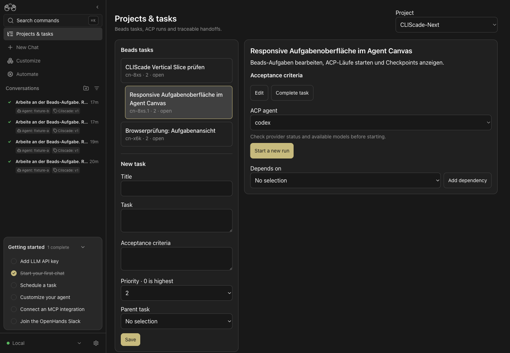
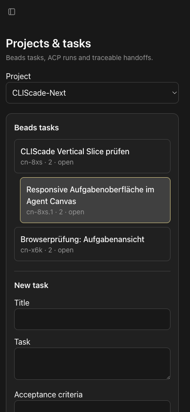

Vorher bot Canvas einzelne Conversations. Die neue Route /tasks verbindet Beads-Aufgaben, mehrere Ausführungen und portable Übergaben, ohne Agentenereignisse oder Task-Daten zu duplizieren.


Ego Lite, echtes Canvas, echter Integrationsdienst und echtes Beads: Aufgabe angelegt, nach Reload wiedergefunden. Bei 390 und 1440 Pixeln kein horizontaler Seiten-Scroll. Touch-Aktionen mindestens 44 Pixel. Drei gezielte UI-/Transporttests, Typecheck, Lint und Produktionsbuild bestanden.
Die unveränderte Upstream-Onboarding-Suite scheitert auch in einem separaten Checkout der Ausgangsrevision; diese Fehler werden nicht als erfolgreiche Gesamtsuite dargestellt. Anbieter-E2E und API-Handoff sind separate Belege. Diese Captures belegen keine authentifizierte Anbieter-Ausführung durch die Oberfläche.